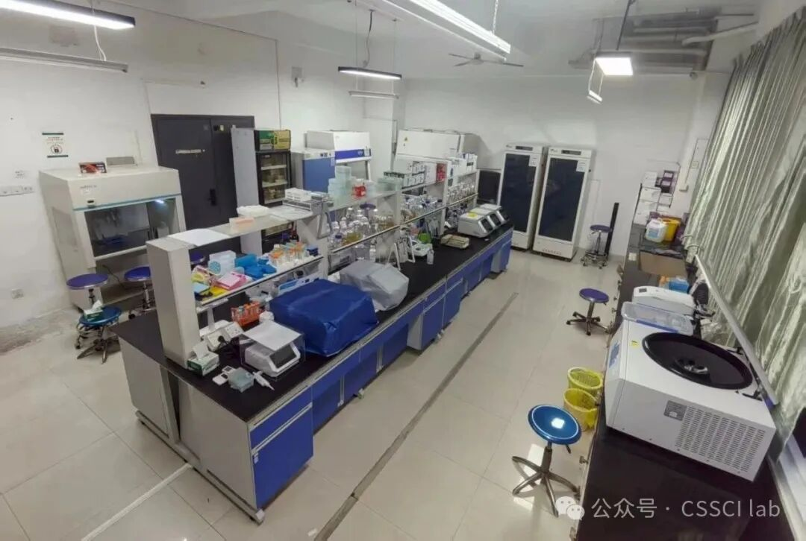
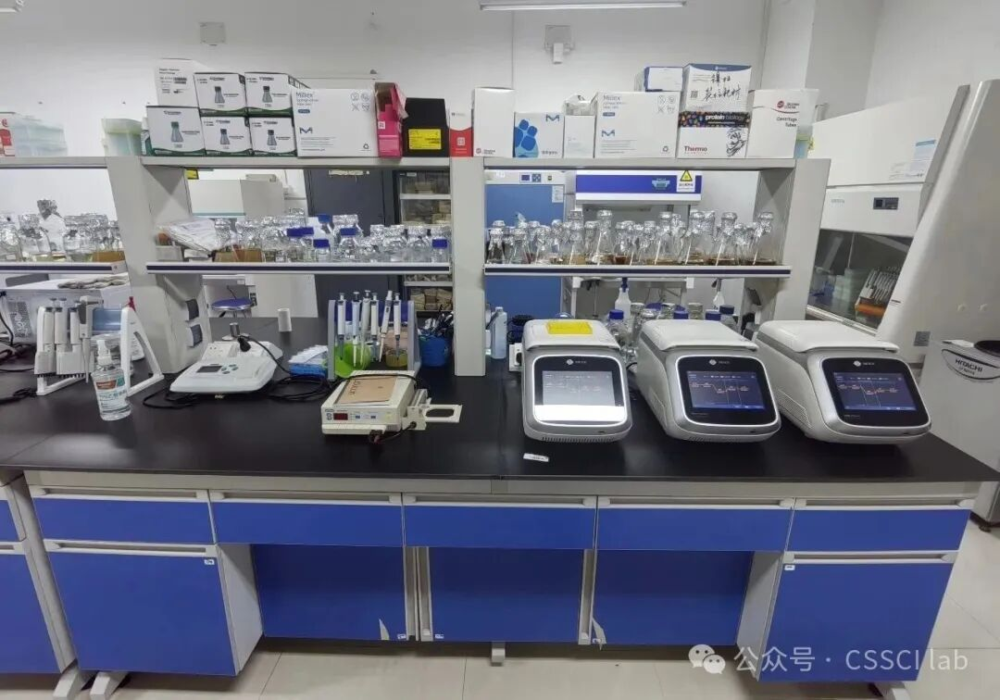
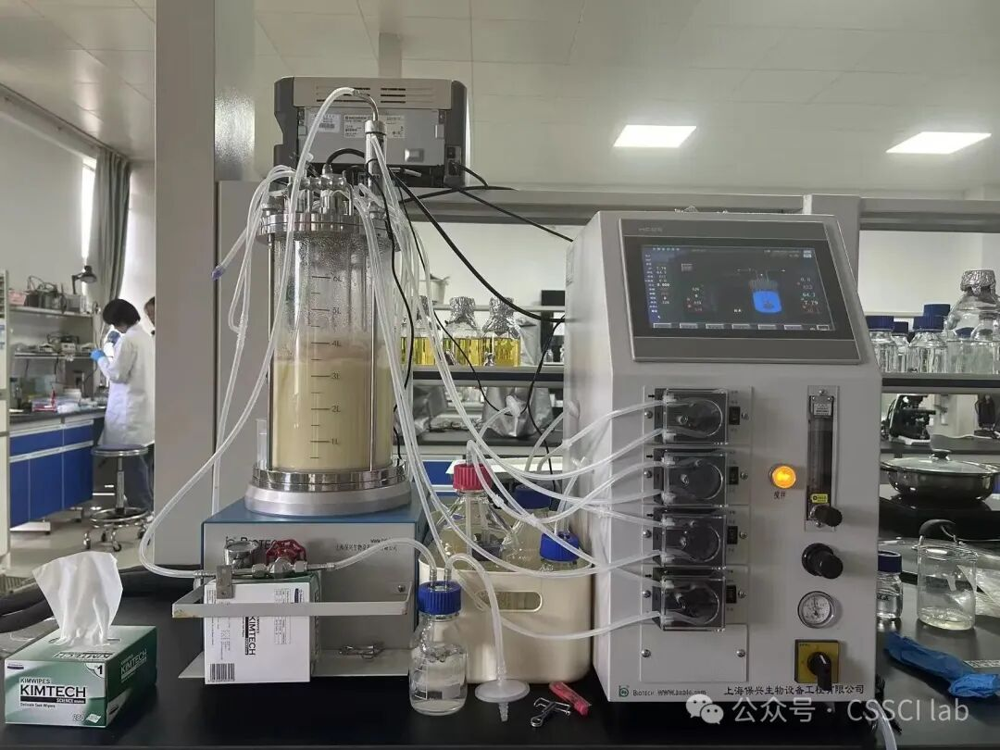
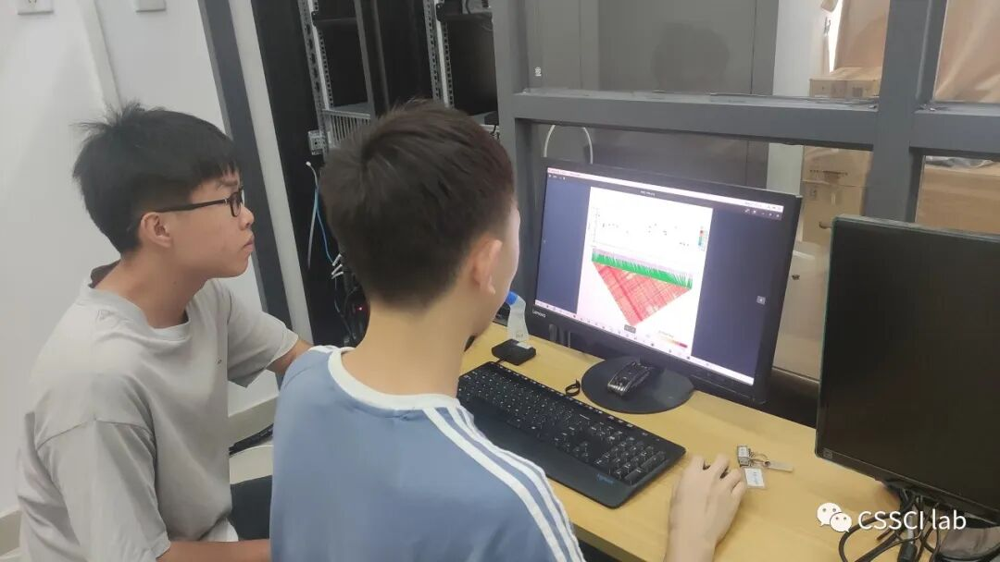
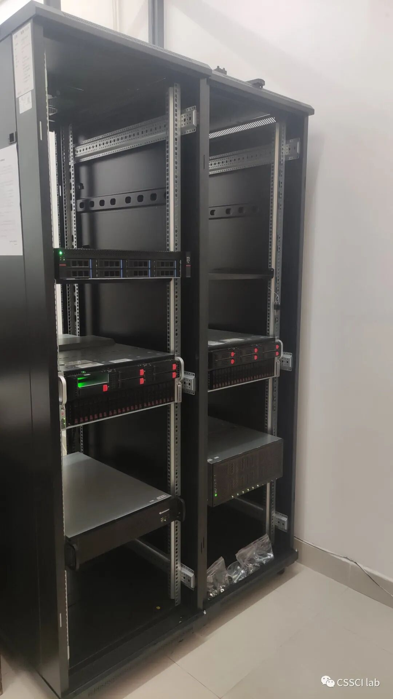

Observation + culture
Multifunction microscopy, CO₂ incubation and clean workstations.

School of Basic Medical Sciences
WET LAB
The wet-laboratory platform supports nucleic-acid analysis, microbial culture, protein purification and functional studies.


CORE EQUIPMENT
Multifunction microscopy, CO₂ incubation and clean workstations.
PCR systems, microvolume DNA analysis and ultrapure water.
Protein purification, sonication and electrophoresis.
Ultra-low-temperature storage, ice production and sample handling.
HIGH-PERFORMANCE COMPUTING
High-performance workstations and GPU servers support genome analysis, structure prediction, molecular simulation, visual analytics and de novo protein design. Some computational work can be performed remotely.


HOW WE WORK
We provide research training in study design, experimental documentation, data analysis and academic communication.
Define a research topic independently or in consultation with a supervisor.
Present progress, review the literature and discuss research questions.
Participate in study design, implementation, analysis and scientific writing.